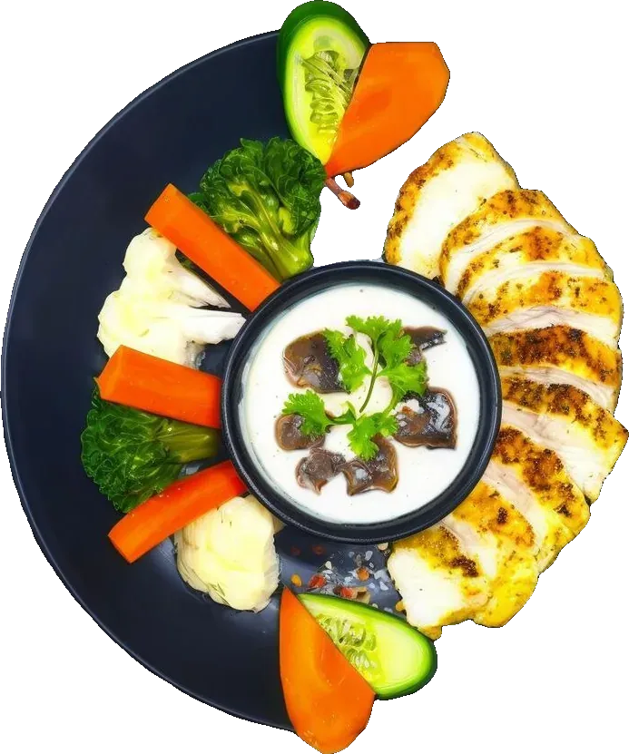
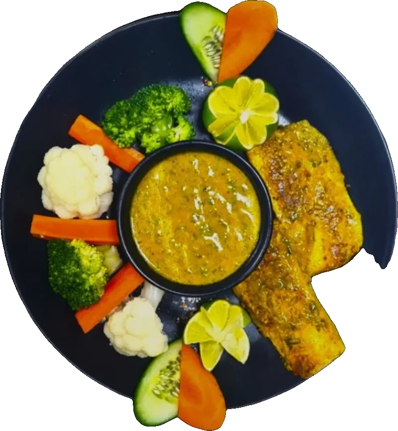
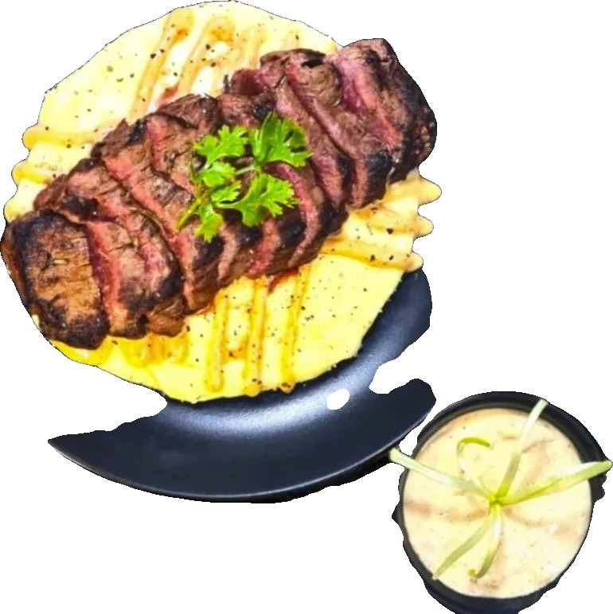
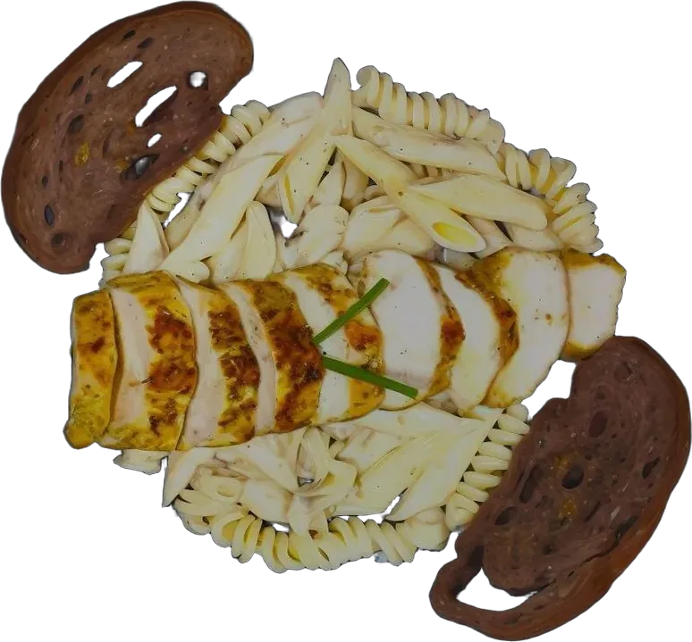

Signature meals
Grilled Chicken With Steamed Greens
- 304kcal
- 36 gprotein
OMR 2.400

280kcalSignature meals
This combination provides a light and flavorful meal packed with protein and essential nutrients.
OMR 2.700Menu price on Talabat, 12 Oct 2026
You may also like



Indulge in a guilt-free delight with this flavorful dish of tender chicken, al dente pasta,2 pieces of garlic bread, a creamy alfredo sauce, all with reduced fat content with our creamy cauliflower, and mushroom based sauce, offering a satisfying and delicious meal.
Order or ask a question